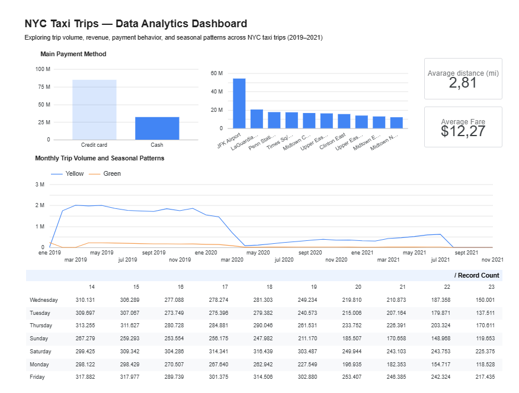

flowchart LR
A["DataTalksClub<br/>NYC TLC CSVs"] --> B["Kestra<br/>scheduled flow"]
B --> C[("GCS<br/>raw CSV")]
C --> D[("BigQuery<br/>external table")]
D --> E[("BigQuery<br/>monthly table<br/>+ unique_row_id")]
E -->|MERGE| F[("BigQuery<br/>yellow / green tripdata<br/>partitioned")]
F --> G["dbt<br/>staging, intermediate, marts"]
G --> H["Looker Studio<br/>dashboard"]
T["Terraform"] -.provisions.-> C
T -.provisions.-> F
I["GitHub Actions<br/>dbt parse"] -.validates.-> G
NYC Taxi: An End-to-End Data Pipeline on Google Cloud
Data Engineering
dbt
Terraform
BigQuery
Kestra
Docker
GCP
Looker Studio
End-to-end batch ELT pipeline for NYC taxi trips (2019-2021), based on the DataTalksClub Data Engineering Zoomcamp, with Kestra and dbt packaged together in Docker and a Looker Studio dashboard.
Repository: View on GitHub
Dashboard: NYC Taxi Analytics Dashboard

Credits
This project is based on the Data Engineering Zoomcamp by DataTalksClub. The course presents each tool (Terraform, Kestra, BigQuery, dbt) as an isolated module. My goal was to connect them into a single, reproducible pipeline and deliver the analysis end to end.
Problem
The NYC Taxi & Limousine Commission publishes millions of trip records every month, but the raw files are not ready for analysis. The goal was to build a reproducible, automated pipeline that takes the raw trip data (Yellow and Green taxis, 2019-2021) to a clean, tested analytical layer and answers basic business questions: how does demand change over time, when is it highest, which zones generate the most revenue, and how do passengers pay?
Data
The data comes from the NYC TLC Trip Record Data, republished by DataTalksClub as monthly gzipped CSV files for Yellow and Green taxis. This project covers 2019 to 2021.
- Format: CSV, one file per taxi type and month
- Volume:
- Schema differences: Yellow taxis use
tpep_timestamps, while Green taxis uselpep_timestamps and addtrip_typeandehail_fee, so each type has its own table
Architecture

Tech Stack
| Layer | Tool | Purpose |
|---|---|---|
| Infrastructure | Terraform | GCS bucket and BigQuery dataset as code |
| Orchestration | Kestra | Scheduled monthly ingestion flow |
| Storage / Warehouse | GCS, BigQuery | Data lake and analytical layer |
| Transformation | dbt | Staging, intermediate and marts models, plus tests |
| Runtime | Docker Compose | Kestra and dbt in a single environment |
| CI | GitHub Actions | dbt parse on every change |
| BI | Looker Studio | Final dashboard |
Methodology
From the course
- Infrastructure as code: Terraform manages the Google Cloud Storage bucket and the BigQuery dataset
- Orchestration: a Kestra flow downloads the monthly CSV, uploads it to Google Cloud Storage, exposes it as a BigQuery external table and loads it into a monthly table. Two monthly cron triggers run it, one for Green and one for Yellow taxis, and the same flow supports backfills
- Idempotent loads: each row gets an MD5
unique_row_id, and aMERGEinserts only rows not already in the destination table, so re-running a month does not create duplicates - Transformation: dbt models organized in staging, intermediate and marts layers, plus macros
What I added
- Integration in a single environment: Kestra and dbt run together with Docker Compose, so the whole pipeline starts with one command instead of separate, disconnected setups
- Data quality and CI: 34 dbt tests, including a custom business-rule test, and a GitHub Actions workflow that runs
dbt parseon every change to thedbt/directory - Dashboard and analysis: a Looker Studio dashboard that answers five business questions about demand, peak hours, revenue by zone and payment method
# Provision the infrastructure
cd terraform
terraform init
terraform apply
# Start Kestra and dbt
cd ..
docker compose up --buildResults & Discussion
- Data quality: the latest dbt run passed 33 of 34 tests. The custom test
trips_invalid_time_with_fareflagged 44 trips where the pickup time is equal to or later than the dropoff time, yet the fare and distance are greater than zero - Demand over time: the monthly trip volume for Yellow and Green taxis shows clear seasonality and a sharp drop in 2020
- Peak hours: a weekday-by-hour pivot table reveals the busiest days and pickup hours
- Revenue by zone: the top 10 zones by total amount are led by the airports, JFK and LaGuardia
- Payment method: credit card is the dominant payment method, accounting for 72.57% of trips (about 84.8 million), compared with 27.43% for cash (about 32.1 million). Card trips also have a higher average total amount, $19.87 versus $15.67 for cash
Challenges & Lessons Learned
- Running Kestra and dbt together.
- Keeping secrets out of Git. Credentials,
.tfvarsand Terraform state are excluded through.gitignore - Data anomalies found by tests. The custom dbt test surfaced 44 trips with a pickup time later than the dropoff time, which showed that tests catch problems a dashboard would hide
Next Steps
- Separate
devandprodenvironments with distinct datasets in dbt - Extend CI from
dbt parsetodbt buildagainst a test dataset - Use a dedicated, least-privilege service account for dbt, separate from Terraform’s
- Set the failing business-rule test to
warnseverity or quarantine the anomalous rows in a staging model
Conclusions
- Connecting tools that are usually taught separately (Terraform, Kestra, dbt, BigQuery) into one containerized pipeline makes the whole project reproducible from a fresh clone
- Automated tests caught anomalous trips that would otherwise have gone unnoticed in the dashboard, so data quality checks belong inside the pipeline, not after it
- Combining a data pipeline with a business-facing dashboard turns raw trip records into answers a non-technical user can act on